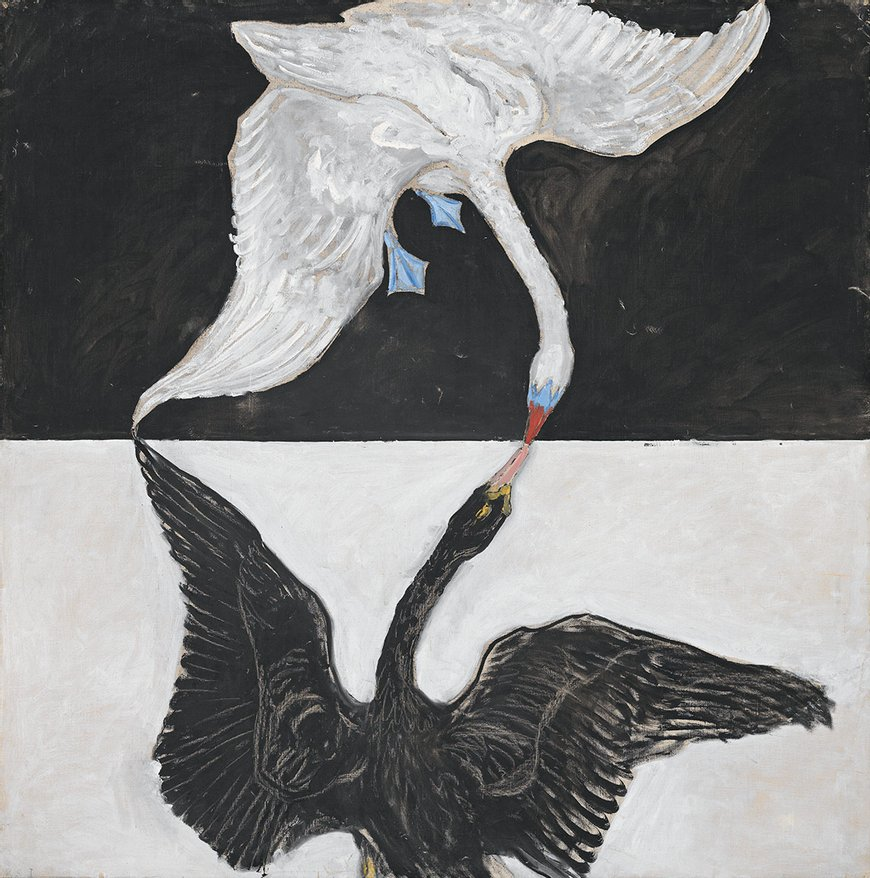

Group IX, The Swan no 1, 1915
- Created following af Klint's 4 year break from the series, no longer receiving such
heightened guidance from spirit guides
- Group of 24 oil canvases again exploring themes of duality: male and female,
life and death, dark and light
- Swan is symbolic of union of opposites as needed for completion in alchemy
- Contrary forces are complimentary